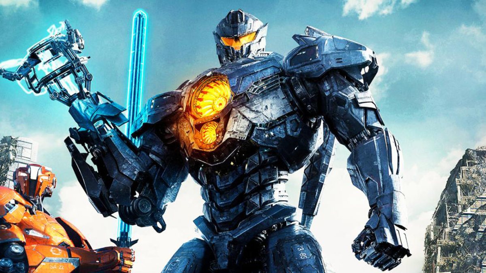

Año de publicacion 2013
"Titanes del Pacífico" es una película de ciencia ficción y acción dirigida por Guillermo del Toro, lanzada en 2013. La trama se desarrolla en un futuro cercano, donde la humanidad se enfrenta a una amenaza extraterrestre conocida como los Kaiju, enormes monstruos que emergen del océano y causan una destrucción masiva en las ciudades costeras.
Para combatir a los Kaiju, las naciones del mundo unen fuerzas y crean los Jaegers, gigantescos robots de combate pilotados por dos personas en una conexión neural. Los pilotos deben sincronizar sus mentes para controlar los movimientos y las acciones del Jaeger. A medida que los Kaiju se vuelven cada vez más poderosos y frecuentes, los Jaegers se convierten en la última línea de defensa de la humanidad.
El protagonista de la historia es Raleigh Becket (interpretado por Charlie Hunnam), un antiguo piloto de Jaeger que se retiró después de una trágica batalla. Sin embargo, cuando la situación se vuelve desesperada, es reclutado nuevamente por el comandante Stacker Pentecost (interpretado por Idris Elba) para unirse a un equipo de élite y pilotar un Jaeger llamado Gipsy Danger.
Raleigh se une a Mako Mori (interpretada por Rinko Kikuchi), una joven piloto con un pasado traumático relacionado con los Kaiju. Juntos, luchan contra los monstruos mientras intentan descubrir una forma de cerrar la brecha dimensional que permite que los Kaiju lleguen a la Tierra.
La película está llena de secuencias de acción emocionantes, batallas épicas entre los Jaegers y los Kaiju, y también explora las relaciones personales entre los pilotos y los desafíos emocionales que enfrentan. "Titanes del Pacífico" combina elementos de ciencia ficción, aventura y drama en una historia apasionante sobre la supervivencia de la humanidad frente a una amenaza monstruosa.
la película "Titanes del Pacífico" (también conocida como "Pacific Rim") no ha sido adaptada en forma de un producto editorial específico como un libro o una novela. Sin embargo, existen diferentes tipos de productos relacionados con la película, como cómics y libros de arte.
Reseñas (Generales)
Natalia Hernandez : Esta peli es muy chida! La recomiendo totalmente. Los efectos especiales son de 10, la historia para mí es decente y bueno, qué esperaban, está dirigida por Del Toro xd. De hecho esta peli me hizo amar la ciencia ficcion. Buenarda, con buenos personajes y gci demasiado epicardo Un detalle: ¿por que no le pidieron dirigir la secuela? Esa si es una total deshonra a la primer película. Calificacion: ★★★★
Nico Torres Argibay : Sinceramente los efectos especiales son increíbles, la banda sonora es épica y emotiva a la vez, pone los pelos de punta la primera vez que la escuchas, los actores están al 100% en sincronía con sus personajes sobretodo la actriz joven de unos 7 años que sale en el recuerdo de Makro cuando tiene visiones sobre su pasado por culpa del enlace neurológico, la recomiendo, te mantiene enganchado desde el principio hasta el final. Calificacion: ★★★★
Santiago Carlos Ugarte Miranda : Amigos no les recomiendo en nada esta película, aqui van las razones: 1. Su trama es muy obvia no tiene esa temática de pregunta o intriga y por ende ni es buena. 2. No te da mucha idea de como es la vida de los kaiyu y su mundo y eso no es bueno. Bueno entre otras cosas eso le arruino la peli y de seguro todos concuerdan conmigo GRACIAS POR SU ATENCIÓN . Calificacion: ★★★★
Luis Barrios : Me pareció brutal, divertida, y los efectos impresionantes, buenas actuaciones, y bien dirigida, es entretenida y no defrauda, si es verdad que es demasiado fantasiosa, pero es una película para pasarlo bien de acción y ciencia ficción, no es un echo real, pero es buena calidad, desde efectos, dirección, montaje etc. Se la recomiendo a todo el mundo, un rotundo Si. Calificacion: ★★★★